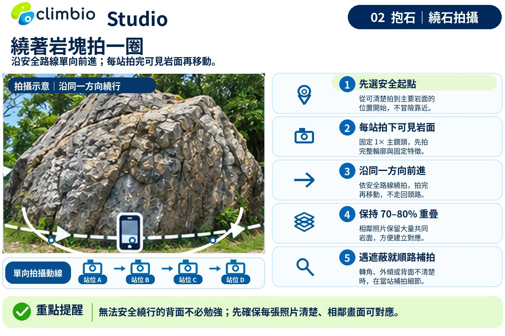
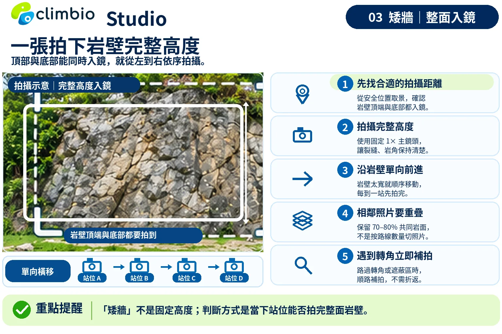
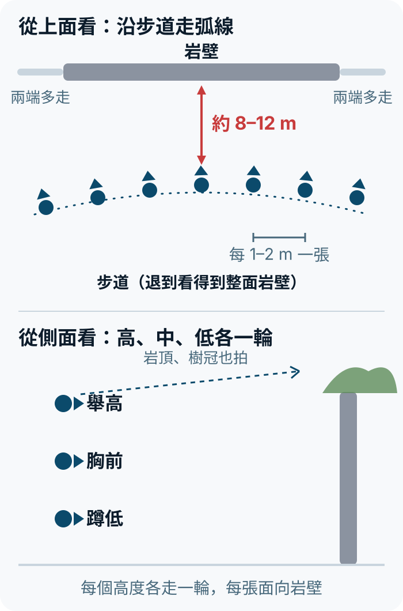

共同規則

- 先打開地圖確認 GPS：到達岩場後，確認目前位置正確，作為後續照片的地理基礎。
- 使用 1× 主鏡頭：不切換焦段、不使用數位變焦。
- 保留 70–80% 重疊：相鄰照片要有大量相同岩面，系統才找得到共同特徵。
- 沿安全動線單向前進：每站先拍完該位置需要的畫面，再往下一站，避免反覆回頭。
- 保留原始照片與 GPS：開啟相機定位，保留含 GPS 的原始照片（EXIF），不以社群平台壓縮圖取代。
選擇光線均勻、岩面清楚的時段。盡量避開人物、繩索、裝備與植物遮擋，並以拍攝安全為優先。
抱石：繞著岩塊拍一圈

- 先選安全起點：從可清楚拍到主要岩面的位置開始，不冒險靠近。
- 每站拍下可見岩面：固定 1× 主鏡頭，先拍完整輪廓與固定特徵。
- 沿同一方向前進：依安全路線繞拍，拍完再移動，不走回頭路。
- 保持 70–80% 重疊：相鄰照片保留大量共同岩面。
- 遇遮蔽就順路補拍：轉角、外傾或背面不清楚時，在當站補拍細部。
無法安全繞行的背面不必勉強；先確保每張照片清楚、相鄰畫面可對應。
矮牆：整面入鏡

- 先找合適的拍攝距離：從安全位置取景，確認岩壁頂端與底部都入鏡。
- 拍攝完整高度：使用固定 1× 主鏡頭，讓裂縫、岩角保持清楚。
- 沿岩壁單向前進：岩壁太寬就依序移動，每到一站先拍完。
- 相鄰照片要重疊：保留 70–80% 共同岩面，不是按路線數量切照片。
- 遇到轉角立即補拍：路過轉角或遮蔽區時，順路補拍，不需折返。
「矮牆」不是固定高度；判斷方式是當下站位能否拍完整面岩壁。
高牆：同一站位，由下往上拍

- 選好安全站位：先確認這個位置能拍到哪些高度與岩面。
- 先拍岩壁下段：從底部開始，包含可辨識的裂縫與岩石特徵。
- 同站接拍中段、上段：逐次向上調整取景，相鄰保留約 75% 重疊。
- 先檢查上下是否拍齊：缺少畫面就在原站補拍，確認清晰後才離開。
- 再往下一站前進：沿岩壁單向橫移，重複由下往上的拍攝順序。
每站先完成上下分段，才往旁邊移動；不為拍到頂端而進入危險區。
起攀辨識：站位拍攝

- 從第一個安全站位開始：用 1× 拍清楚岩壁底部、裂縫與周圍固定特徵。
- 同一站先把畫面拍齊：拍下當站可見的起攀區；不清楚就當場補近景。
- 沿岩壁往同方向移動：利用下一站自然取得不同視角，不要折返回拍。
- 相鄰站保留共同岩面：約 70–80% 重疊，讓不同位置的照片能對應。
- 持續拍到整區完整：岩壁有 10 條或更多路線就增加站位，依序完成。
不依賴 Bolt，現場也不必標起攀點；先拍齊所需資料，再依現場測試結果減少拍攝張數。
岩場 3D 模型：退後拍一套

上面的拍法（貼近、一站一站）建出來的是岩壁近處的樣子，適合起攀辨識。要讓讀者在紅點貓裡站在步道上看整面岩壁、沿著岩壁走，模型畫的是「讀者看的位置」，所以那個位置要有照片：貼近拍的照片在退後的角度沒有資料，畫面會蒙霧、岩頂重影。同一個岩場請拍兩套：貼近拍（上面幾節）加這一套退後拍。
- 退到看得到整面岩壁：站在步道上，離岩壁約 8–12 公尺（頂端到底部都入鏡的距離），不冒險靠近或爬上亂石。
- 沿岩壁走弧線，每 1–2 公尺一張：每張都面向岩壁、跟岩壁中央大致正對；走一步拍一張，不要停在原地轉圈。
- 高、中、低各走一輪：胸前一輪，手舉高一輪（往下看岩壁上半部），蹲低一輪（看底部與地面）。三輪走同一條弧線。
- 岩頂與樹冠也要拍：往上拍岩壁頂端、樹冠與天際線，模型的上緣才不會缺一塊或露出空白。
- 兩端多走一段：左右都走過岩壁的邊緣約 5 公尺再拍回來，模型的邊緣才不會突然切掉。
- 內角、岩角、轉角各補一組：除了正對，往左、往右各斜約 35° 再拍一組，凹進去或凸出來的那一面才拍得到。
沿用上面的共同規則：1× 主鏡頭、不用數位變焦、保留含 GPS 的原始照片、光線均勻時拍、避開人、繩索與裝備。風大時樹和草會晃，晃動的地方會糊，盡量挑風小的時候。照片是拍完才一次整理，現場不必挑，也不必標路線。
要拍幾張？
照上面的間距算：一面 20 公尺寬的岩壁，弧線上約 10–20 個位置，乘上高、中、低三輪，再加兩端、岩頂與轉角，大約是幾十張。數量還在實地測試，先照間距拍齊；寧可多拍，後面會自動過濾沒用的。
為什麼貼近拍的照片不夠？
高斯潑濺只有在「拍照的位置附近」才畫得清楚。讀者在紅點貓裡是從步道看整面岩壁，如果沒有任何照片是從那裡拍的，那個角度的畫面就是模型猜出來的，會蒙霧。所以不論貼近拍了多少張，退後拍都要另外補。
拍完之後呢？
看把路線書變成 3D 版：建模、把 2D 路線書上的路線放到 3D 岩壁上、檢查與發佈。
想多知道一點
為什麼一定要 GPS？
GPS 是照片匯入的必要條件。請保留含 GPS 的原始照片，不要用傳訊軟體或社群平台壓縮過的版本。
要拍幾張？
依岩壁寬度與高度而定。拍攝張數與建模、辨識的效果仍需岩場實地測試；先拍齊，再逐步減少。
拍完之後呢？
到 Studio 匯入照片，整理成可閱讀的攀岩資料。流程見 Studio 怎麼用。